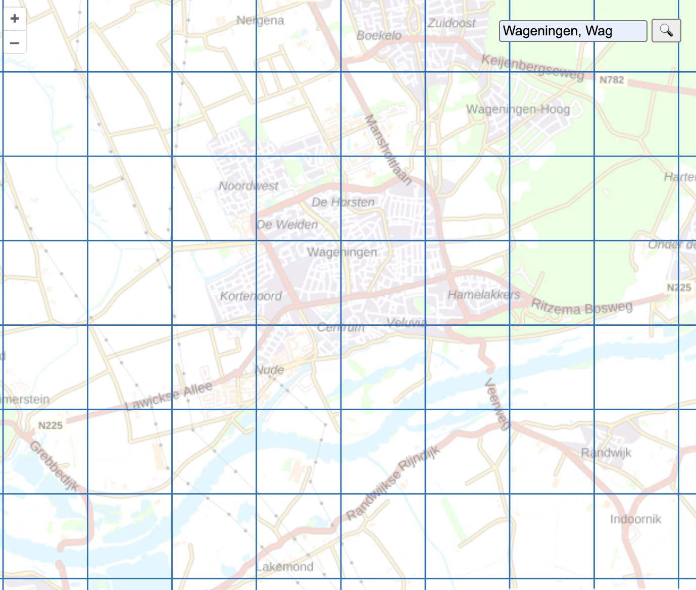

1
Split the ROI GeoTIFF into smaller tiles
The original ROI.tif is too large to use directly for training. It is split into many smaller tile_*.tif files. Each tile keeps georeferencing information, which means pixel positions can still be converted back to real-world coordinates later.
Input
ROI.tifProcesstile into fixed-size GeoTIFF images
Output
tile_001.tif, tile_002.tif, ...